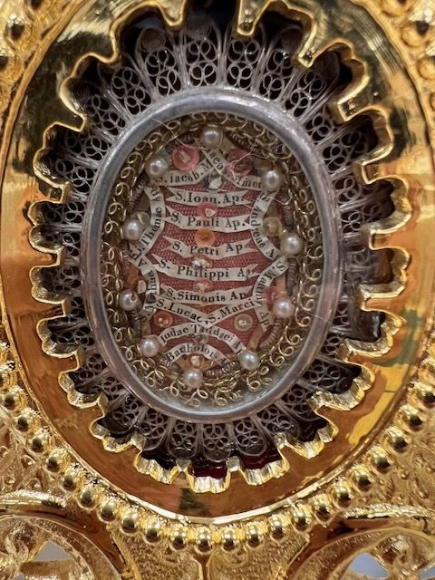

The label is in Latin
The Apostles and Evangelists, filigree theca
On the label
S. Iacob. Ma[ior]S. Iacob. MinorS. Ioan. Ap.S. Pauli Ap.S. Petri Ap.S. Philippi Ap.S. Simonis Ap.S. LucaeS. MarciIudae Taddaei Ap.S. Barholom. Ap.S. Thomae Ap.S. Andreae A[p].S. Matthiae Ap.
In English
[Relics] of St. James the GreaterSt. James the LessSt. John, ApostleSt. Paul, ApostleSt. Peter, ApostleSt. Philip, ApostleSt. Simon, ApostleSt. LukeSt. MarkJude Thaddeus, ApostleSt. Bartholomew, ApostleSt. Thomas, ApostleSt. Andrew, ApostleSt. Matthias, Apostle.
Saints named
Twelve ApostlesPeterPaulAndrewJames the GreaterJames the LessJohn the EvangelistPhilip the ApostleBartholomewThomasSimonJude ThaddeusMatthiasMarkLuke
An older theca with paper ribbons, silver filigree and pearls. Some ribbons curl and a few letters are hidden; the readings follow what is visible.